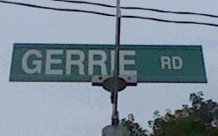

Ciad Míle Fáilte / Welcome to Jim Gerrie's Home Page

My CV
Jim's Curriculum Vitae
My Software
Jim's Software Page
My Job
Jim's CBU Web Page
My Kids
Madeleine's Home Page
Charlie's Home Page
Naomi's Home Page
Religious Interests
The United Church of Canada
Search the New Revised Standard Bible
World Religions
Net Places
Facebook
Internet Archive
Aliant Home Page
Around Town
The Cape Breton Post
Cape Breton Regional Municipality
Municipal Services Nova Scotia
Regions East of the United Church
United Heritage Church Sydney
PSAC Homepage
CBU Faculty Association (CBUFA)
Brookland Elementary School
Sherwood Park Education Centre
Sydney Academy High School
Cape Breton Regional Library
101.9 The Giant (Storm Centre)
Rudderham Family Y
Philosophy on the Net
Wikipedia Page of Dr. Jay Newman
(My Ph.D. advisor of blessed memory)
Dr. Cyril Welch
Canadian Society of Christian Philosophers
Society for Philosophy and Technology
My Food Philosophy
Atlantic Regional Philosophical Association
Information about Luddism & Neo-Luddites
McLuhan Centre for Culture and Technology
Centre for History and Phil of Sci, Tech and Med
Centre for Studies in Religion and Society
Tekhnema
My Philosophical Blog
/
My Software Blog
Academic Stuff
Teaching Philosophy
Writing an Essay
Writing a Critique
Research Paper
Biblio Assignment
Citation Examples
Grading Symbols
Moodle at CBU
Hobbies & Interests
My Hobbies Page
Haggis (Our last Burns' Night)
Kairos Canada
The Chebucto Community Net
The Globe and Mail
The Guardian
The Evening Standard
Royal Astronomical Society of Canada
Extinction Rebellion Nova Scotia
David Suzuki Foundation
New Democratic Party
The Monastery of St. Catherine
Handley Page Halifax Restoration Project
(Bomber aircraft flown by my dear old dad)
Send a comment to
James Gerrie
or
Patricia Gerrie